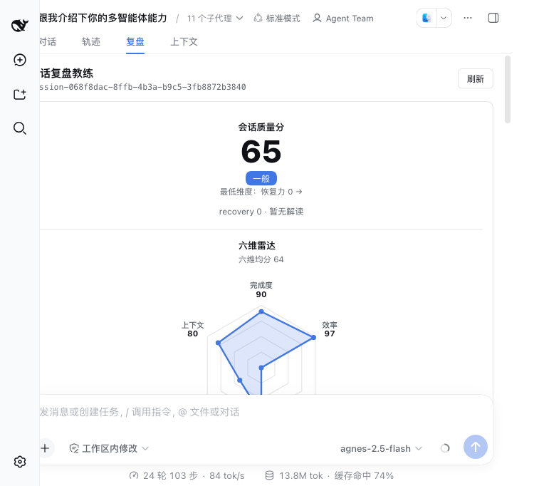
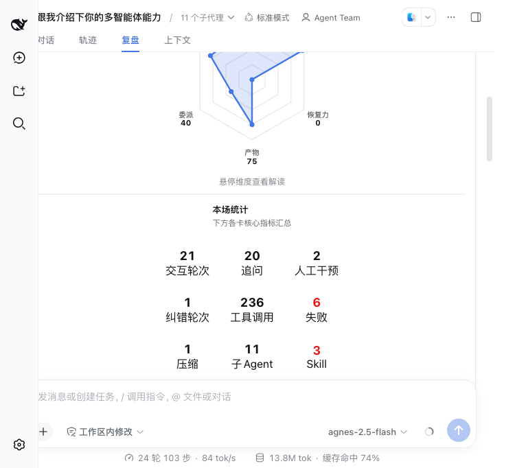
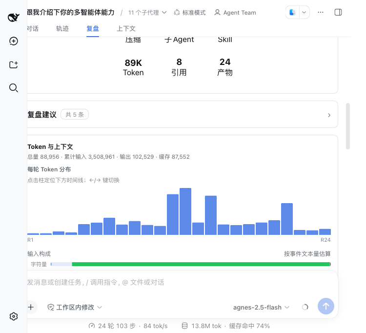
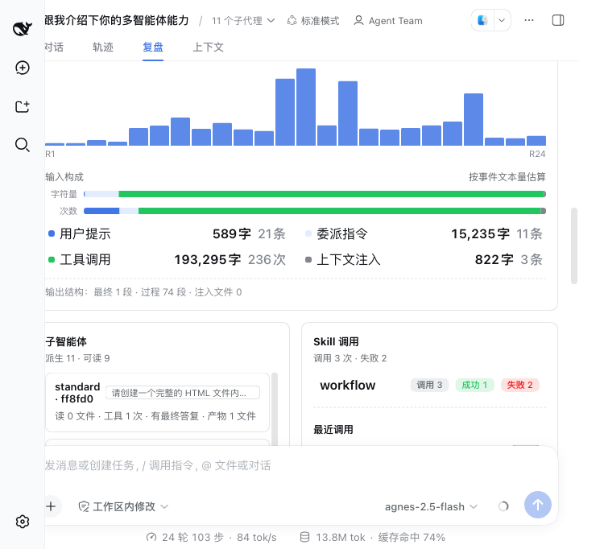
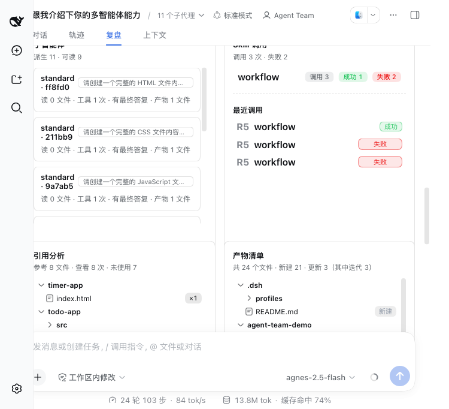
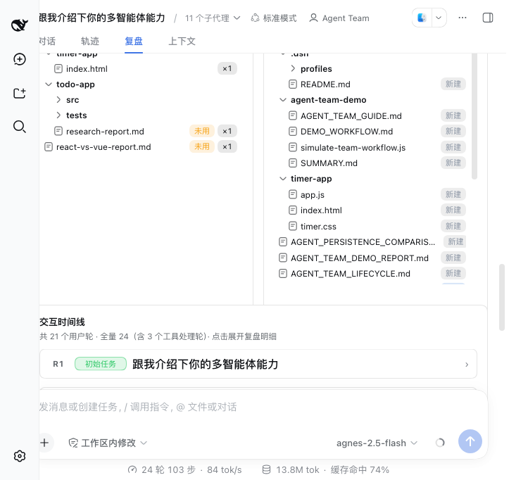
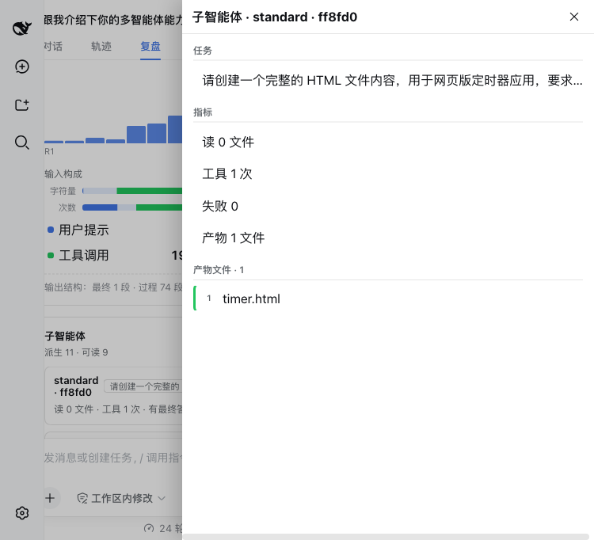
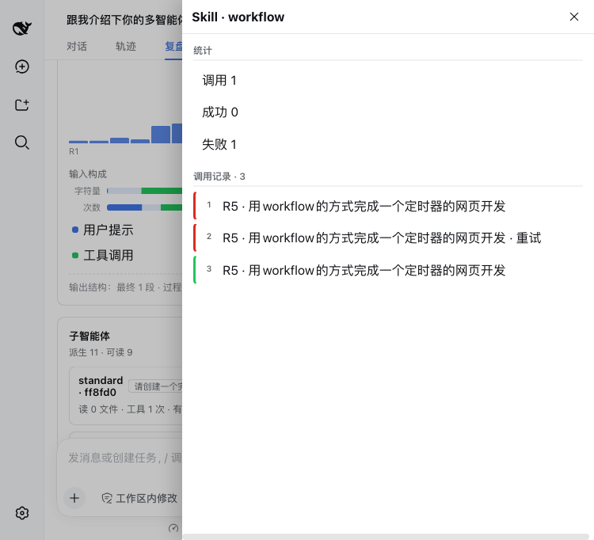
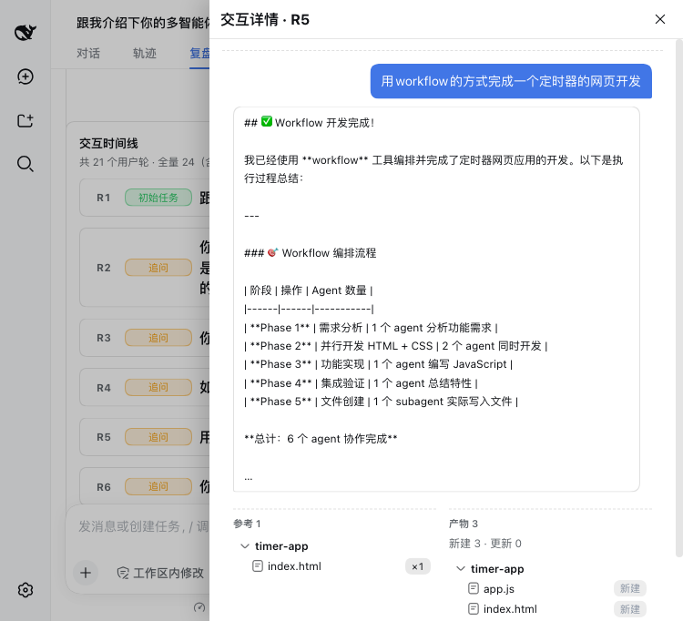
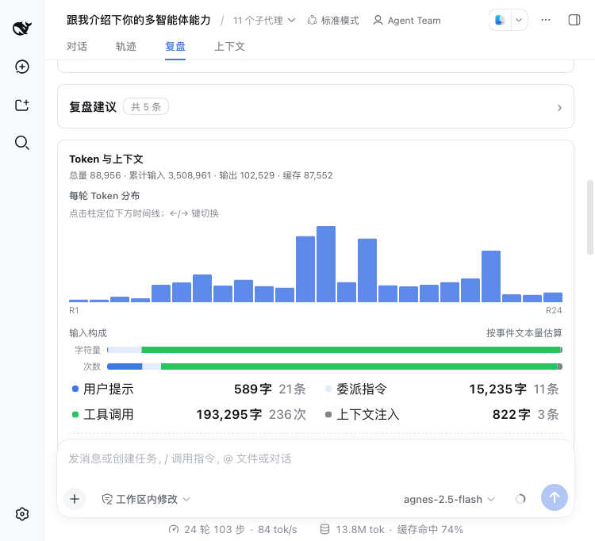

本次走查覆盖 dsh-coach 复盘页的全部核心模块：会话质量分、六维雷达、本场统计、Token 与上下文（柱状图+输入构成）、子智能体、Skill 调用、引用分析、产物清单、交互时间线，以及 4 类抽屉（子智能体、Skill、上下文构成、时间线）。
| # | 准则 | 状态 | 说明 |
|---|---|---|---|
| 1 | 徽章统一 | ⚠️ 部分符合 | 大部分徽章为 11px、999px 胶囊形、语义色透明底，符合规范。但存在以下不一致： • tagOk 与 tagError padding 略有差异（0px 7px vs 1px 8px）• tagMore（+1）字号为 12px，与其他徽章 11px 不统一• 文件树徽章 padding 为 1px 7px，与 Skill 区徽章 1px 8px 有 1px 差异 |
| 2 | 数字+量词 | ✅ 符合 | 量词使用统一（条/字/次/文件/段/个/轮），副标题均用「·」分隔。如： • 读 0 文件 · 工具 1 次 · 有最终答复 · 产物 1 文件• 总量 88,956 · 累计输入 3,508,961 · 输出 102,529 · 缓存 87,552• 派生 11 · 可读 9 |
| 3 | 抽屉结构 | ✅ 符合 | 子智能体抽屉：指标在上（读 0 文件 / 工具 1 次 / 失败 0 / 产物 1 文件，纯文字无序号），明细在下（1 timer.html，有序号+绿色色条）。Skill 抽屉：统计在上（调用 1 / 成功 0 / 失败 1），调用记录在下（1/2/3 序号 + 红/绿色条）。结构正确。 |
| 4 | 卡片等高 | ✅ 符合 | 并排卡片高度一致：子智能体与 Skill 调用卡片均为 368px 高（750px 视口下）；引用分析与产物清单均为 448px 高。stretch 对齐正常。 |
| 5 | 边框规范 | ⚠️ 部分符合 | 时间线行（bhhTdW_roundRow）与子智能体行（bhhTdW_agentRow）borderRadius 均为 10px、margin 均为 0 0 8px，样式一致。但 border 为 1px solid rgba(0,0,0,0.1)，而非预期的 border-l2（2px）。边框偏细，视觉层次感略弱。 |
| 6 | 状态徽章 | ✅ 符合 | 时间线中所有状态徽章（初始任务/追问/纠错/干预）均固定 56px 宽度、text-align: center，居中对齐。 补充徽章（引用 N / 产物 N / +1）为自适应宽度，左对齐，符合预期。 |
| 7 | 配色 | ✅ 符合 | 主色：rgb(65, 118, 230) = #4176e6（Token 柱状图柱子）✅成功：绿色 rgb(34, 197, 94) ✅ 失败：红色 rgb(236, 19, 19) ✅ 未用/警告：橙色 rgb(245, 158, 11) ✅ |
| 8 | 响应式 | ❌ 不符合 | box-sizing 为 content-box（html 与 body 均为 content-box），未设置全局 border-box。750px 宽度下无横向溢出（scrollWidth = clientWidth = 750），但 content-box 在复杂布局下易导致宽度溢出风险。 |
| 9 | 交互 | ⚠️ 部分符合 | • 行/卡片 cursor: pointer，有 transition 过渡 ✅ • 下钻均走右侧抽屉 ✅ • Token 柱状图柱子点击后直接跳转/滚动到时间线对应轮次，而非展开 Token 明细抽屉——与任务描述中「Token 抽屉」预期不符，可能是交互设计变更或缺少该抽屉。 |
| 10 | 一致性 | ✅ 符合 | 相同场景使用同一组件：文件树（引用分析）与产物清单使用相同的徽章组件（×1 / 未用 / 新建）；各抽屉结构统一（标题 + 副标题 + 分区）；pill 徽章全局统一风格。 |
位置：全局 html / body
现象：document.documentElement 与 body 的 computed box-sizing 均为 content-box，未做全局 border-box 重置。
影响：padding 和 border 会增加元素实际宽度，在含 padding 的容器中容易导致布局溢出。当前 750px 视口下暂未出现横向滚动，但在更窄视口（如 375px 移动端）或增加内边距后极易出问题。
建议：在全局 CSS 中添加 *, *::before, *::after { box-sizing: border-box; }。
位置：Token 与上下文 → 每轮 Token 分布柱状图
现象：点击柱状图柱子后，页面直接滚动到时间线对应轮次并高亮，并未展开右侧 Token 明细抽屉。任务描述预期为「点击柱子展开 Token 明细抽屉」。
影响：用户无法在当前位置直接查看单轮 Token 明细（输入/输出/缓存拆分），必须滚动到时间线区域，交互路径变长。
建议：确认产品预期——若设计为「点击柱子=定位时间线」，则更新文案（当前文案「点击柱定位下方时间线」已说明）；若预期为抽屉，则补充 Token 明细抽屉。
位置：时间线行 bhhTdW_roundRow、子智能体行 bhhTdW_agentRow
现象：实际 border 为 1px solid rgba(0,0,0,0.1)，与设计规范中 border-l2（2px 边框）不一致。
影响：卡片/行的视觉层次感偏弱，在密集列表中行与行之间的边界不够清晰。
建议：确认设计稿——若为 2px 边框则调整 CSS；若当前 1px 为最终设计则更新准则文档。
位置：各区域徽章
现象：
tagOk（成功）padding: 0px 7px，tagError（失败）padding: 1px 8px——垂直方向差 1px1px 7px，Skill 区徽章 padding: 1px 8px——水平方向差 1pxtagMore（+1）字号为 12px，其他徽章为 11px影响：视觉上几乎不可感知，但在严格的设计系统中属于 token 不统一。
建议：统一徽章 token：font-size 11px、padding 1px 8px，所有变体共用基础样式。










| 检查项 | 实测值 | 预期值 | 结果 |
|---|---|---|---|
| 主色（Token 柱） | rgb(65, 118, 230) = #4176e6 | #4176e6 | ✅ |
| 成功色 | rgb(34, 197, 94) | 绿色系 | ✅ |
| 失败色 | rgb(236, 19, 19) | 红色系 | ✅ |
| 未用/警告色 | rgb(245, 158, 11) | 橙色系 | ✅ |
| 徽章圆角 | 999px | 999px（胶囊形） | ✅ |
| 徽章字号 | 11px（大部分） | 11px | ⚠️ tagMore=12px |
| 时间线状态徽章宽度 | 56px，center | 56px，居中 | ✅ |
| 行 borderRadius | 10px | 10px | ✅ |
| 行 margin-bottom | 8px | 8px | ✅ |
| 行 border 宽度 | 1px | 2px（border-l2） | ⚠️ |
| box-sizing | content-box | border-box | ❌ |
| 横向溢出（750px） | 无（scrollWidth=clientWidth=750） | 无溢出 | ✅ |
| 并排卡片高度 | 368px / 448px（两侧一致） | 等高 stretch | ✅ |